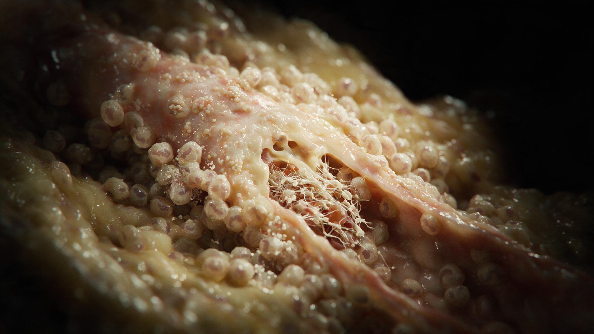
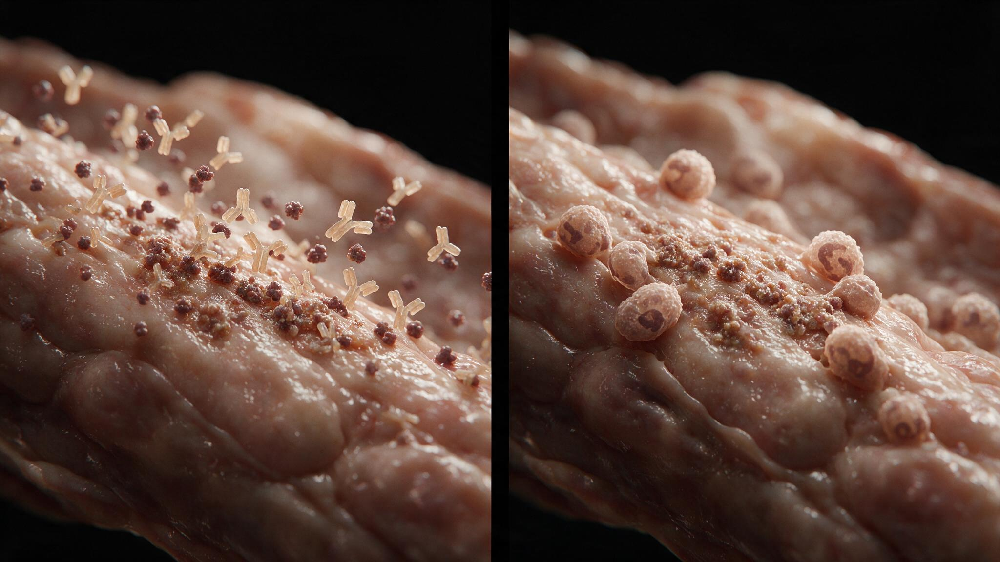
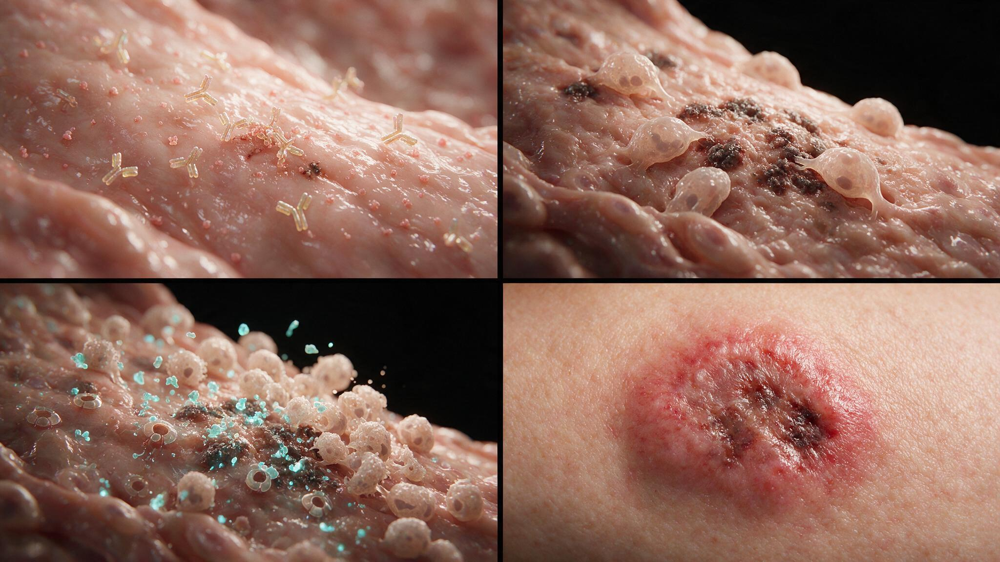

A vaccine booster. An insulin injection. A monoclonal antibody infusion. Each time a needle introduces an antigen into tissue that already has circulating IgG antibodies, the conditions are set for a local immune catastrophe. Within 4 to 12 hours, the injection site becomes swollen, erythematous, and exquisitely painful. The skin may ulcerate. The underlying vessels are being destroyed by immune complexes, complement, and neutrophils — the three effectors of Type III hypersensitivity, localized to a single site. This is the Arthus reaction.
Unlike anaphylaxis, which is immediate and IgE-mediated, or serum sickness, which is systemic, the Arthus reaction is localized and IgG-driven. It is the prototype of immune complex vasculitis: antigen and antibody meet in the vessel wall, form insoluble lattices, fix complement, and summon neutrophils that degranulate directly into the endothelial surface. The vessel wall undergoes fibrinoid necrosis. The lumen thromboses. The tissue infarcts. What looks like a simple injection-site reaction is, at the microscopic level, a contained war between immune complexes and the vessel that houses them.


The Arthus reaction requires sensitization: the patient must already have circulating IgG antibodies against the antigen being injected. When the antigen enters the tissue at the injection site, it diffuses through the interstitial space and encounters these pre-existing IgG molecules. They bind. But the reaction does not stop at simple antigen-antibody pairing. Multiple IgG molecules bind multiple antigen molecules, forming a cross-linked lattice — an immune complex — that grows until it becomes insoluble and precipitates out of solution. The complexes deposit in the walls of small dermal capillaries and post-capillary venules, embedding themselves in the basement membrane and subendothelial matrix. At this point, the vessel wall is studded with immune complexes but still intact. The damage has not yet begun.
The Fc regions of the IgG molecules in the deposited complexes are now exposed and immobilized, a configuration that activates the classical complement pathway with high efficiency. C1q binds. The cascade propagates through C4 and C2 to C3 convertase, which cleaves C3 into C3a and C3b. C3a diffuses outward as an anaphylatoxin, increasing vascular permeability and acting as a chemoattractant. C5a, generated downstream, is the most potent neutrophil chemoattractant in the body. Within minutes, neutrophils begin marginating along the endothelium, adhering via selectins and integrins, and diapedesing through the vessel wall directly into the site of complex deposition. They arrive primed, and what they find — immune complexes fixed to a surface — triggers frustrated phagocytosis: the neutrophils degranulate directly onto the vessel wall, releasing proteases, collagenases, and reactive oxygen species not into a phagolysosome, but into the extracellular matrix of the vessel itself.
The enzymes released by degranulating neutrophils digest the vessel wall. Endothelial cells detach. The basement membrane fragments. Smooth muscle cells in the media die. The digested wall takes on a characteristic appearance on histology: a bright, glassy, structureless eosinophilic material called fibrinoid necrosis, so named because it stains like fibrin and looks like necrosis. Fibrin and plasma proteins leak into the damaged wall, filling the space where viable tissue used to be. The exposed subendothelial collagen triggers the coagulation cascade. Platelets adhere. A fibrin-platelet thrombus forms in the lumen, further compromising flow. The vessel is now both leaking and occluded. The tissue downstream becomes ischemic. At the gross level, the skin over the injection site swells, reddens, and may progress to a central zone of hemorrhagic necrosis — the visible endpoint of a microscopic immune complex vasculitis.

The Arthus reaction is self-limited. The injected antigen is cleared by the very immune complexes and phagocytes that formed in response to it. The neutrophils apoptose. The complement cascade winds down. The damaged vessel heals by fibrosis over days to weeks, leaving a small scar. But the lesson of the Arthus reaction is not about its resolution — it is about what it reveals. The same mechanism, scaled systemically, produces serum sickness. The same mechanism, if the antigen is persistent (as in chronic hepatitis B or C, or lupus), produces chronic immune complex vasculitis with multi-organ involvement. The Arthus reaction is the prototype: a contained, visible, local experiment in what happens when IgG meets antigen in the wrong place at the wrong time. The illustrations in this series follow the cascade from lattice formation through neutrophil degranulation to fibrinoid necrosis, because understanding the vessel wall as both the site and the target of the injury is what makes Type III hypersensitivity legible.
You're set. We'll send the full write-up to your inbox shortly.